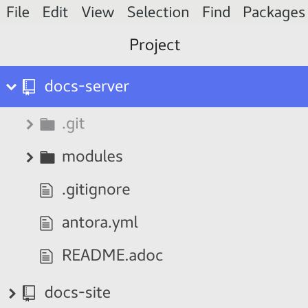
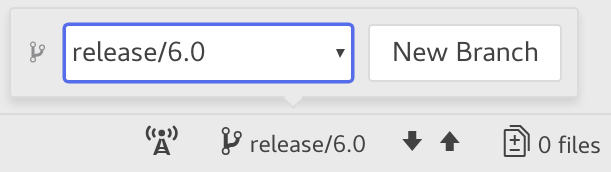
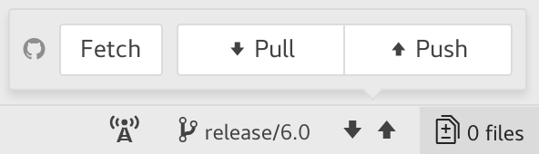
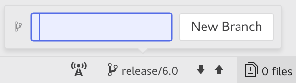

Create a Working Branch
Always make a new working branch for your work, no matter how small the change. You can create a working branch in Atom or from the command line.
Choose the Right Base Branch
A base branch contains the original source documentation. You create working branches from a base branch and send pull requests to a base branch for integration. A working branch isolates changes that solve a single issue. A pull request submitted from a working branch that only contains closely related changes is easier to test, review, and merge.
The Couchbase documentation repositories maintain two types of base branches: master and release.
The master branch (master) contains the documentation for the next, unreleased product version.
New documentation for the next product version, its features, and non-bug related improvements should be based off of the master branch.
This is the branch that you will most often base your working branch off of and submit pull requests to.
Release branches (release/$.$) contain the documentation specific to a stable product release.
Fixes related to product bugs and documentation errors in stable releases are based off of a release branch only if that bug or error is only present in that release.
For example, if a broken code snippet is discovered in the Server 5.1 documentation, but it isn’t present in the 5.5 and master branch documentation, then you’d base your working branch on the release/5.1 branch.
If you’re unsure which branch to create your working branch from, check the associated issue’s Affects versions field, or, in its comment section, ask the Docs team for more information. Also note that some of the repositories use custom branch names, see Repositories that Require Special Handling for more information.
Create a Working Branch in Atom
These instructions assume you’ve installed Atom and forked, cloned, and configured the upstream and origin remotes of a documentation repository.
-
Start Atom.
-
If this is the first time you’ve worked on a repository, it may not appear in Atom’s Project panel. Go to and add the folder containing your local repository.
-
Select the repository directory that contains the files you want to edit.
 -
Choose the right branch to base your changes on. Click the branch icon at the bottom of the editor. In the modal window, select the desired base branch from the dropdown menu.
 -
Pull the latest changes from the upstream repository. Click the arrow icons at the bottom of the editor, then press Pull.
 -
Create a new working branch from the base branch. Click the branch icon. In the modal window, click New Branch, and enter the name of the new working branch in the form field.
The name of a working branch should pair it with the issue it resolves. For example, if you’re resolving DOC issue #6500, you’d name the working branch
DOC-6500.
Now you’re ready to write or edit documentation.
Create a Working Branch from the Command Line
These instructions assume you’ve forked, cloned, and configured the upstream and origin remotes of a documentation repository.
-
Open a terminal and change into the repository directory that contains the files you want to edit.
$ cd path/to/repository-folder
-
Choose the right branch to base your changes on and check it out.
$ git checkout name-of-base-branch
-
Download the latest changes from the upstream repository.
$ git pull upstream name-of-base-branch
-
Create a working branch from the base branch and checkout the working branch.
$ git checkout -b DOC-$$$$
The name of a working branch should pair it with the issue it resolves. For example, if you’re resolving DOC issue #6500, you’d name the working branch
DOC-6500.